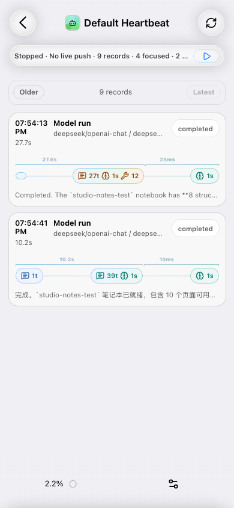
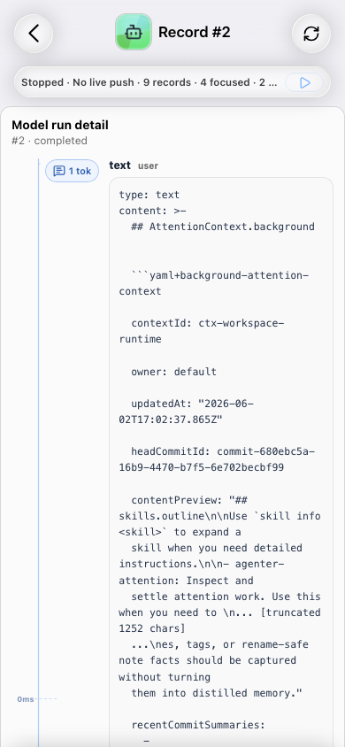
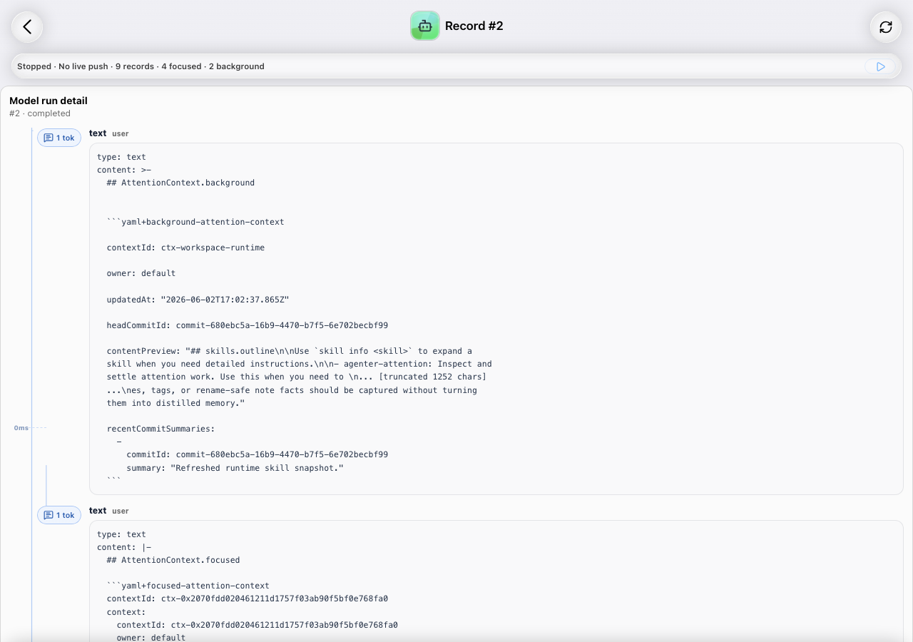

add-heartbeat-record-pagination · Self Review
Real example target:
http://127.0.0.1:4183/heartbeat/00ca43a6-c45c-5628-b398-6f0e5e1d4a7b?mode=configable&silentConnect=true&pageSize=2
Route And Pagination Evidence
Dedicated Detail Route
Row click opened
/heartbeat/:runtimeId/records/107; list page did not inline-expand detail.
Query Preservation
Detail URL preserved
pageSize=2, mode=configable, silentConnect=true, and wsUrl.
Fixed Anchor
Latest page record ids
[107,108]; Older page record ids [106,107]; Latest became enabled.
Overflow
Mobile and desktop checks reported
document.scrollWidth === document.clientWidth.
Detail Surface Evidence
- Model Run detail:
data-kind=model_call, 17 station chips, 17 station bodies, 16 time SVGs, 16 vertical chip links. - Compact detail:
data-kind=compact, compression object present,New Contextactive by default. - Config detail:
data-kind=config, changed-controls object present,Diff Configactive by default, source languagediff.
Verification Commands
bun run --cwd packages/web-heartbeat-view/example test -- --run heartbeat-example-app.test.ts-> 13 passed.bun run --cwd packages/web-heartbeat-view/example typecheck-> 0 errors, 0 warnings.bun run --filter '@agenter/web-heartbeat-view' test:unit-> 19 passed.bun run --filter '@agenter/web-heartbeat-view' test:dom-> 12 passed.bun test packages/client-sdk/test/runtime-store.test.ts --timeout 30000-> 93 passed.bun run openspec:vision -- validate add-heartbeat-record-pagination-> valid.bun run openspec:vision -- commit-check add-heartbeat-record-pagination --phase self-review-> ok.
Screenshots



Open Items
4.8Studio migration remains explicitly unauthorized.4.10stays open until checkbox changes are paired with the intended commit hygiene.- Archive stays open until user acceptance and final spec sync/archive.